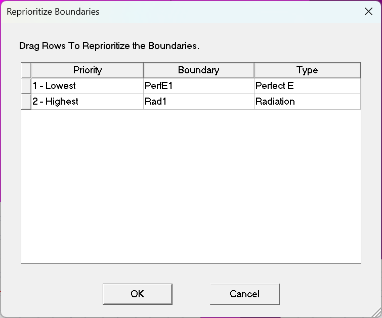

关于边界条件
在电磁场理论学习中我们知道，电磁场问题的求解都归结于麦克斯韦 (Maxwell) 方程组的求解在 HFSS 中波动方程的求解同样是由微分形式的麦克斯韦方程推导出来的。而边界条件定义了求解区域的边界以及不同物体交界处的电磁场特性，是求解麦克斯韦方程的基础。
只有在假定场矢量是单值、有界、并且沿空间连续分布的前提下，微分形式的麦克斯韦方程组才是有效的；而在求解区域的边界、不同介质的交界处私场源处，场矢量是不连续的，那么场的导数也就失去了意义。边界条件就是定义跨越不连续边界处的电磁场的特性，因此，正确地理解、定义并设置边界条件，是正确使用 HFSS 仿真分析电磁场场特性的前提。
使用 HFSS 时，用户应该时刻意识到: 边界条件确定场。正确地使用边界条件，是HFSS能够仿真分析出准确结果的前提。
调整边界条件的优先级

边界条件的详细说明
在这篇 Blog 中有简单提到边界条件的大致使用，这里详细展开说明一下。
1. 理想导体边界条件 Perfect E
Perfect E 是一种理想电导体或简称为理想导体边界条件。这种边界条件的电场垂直于表面。有两种边界被自动设为理想导体边界条件：
背景结构说明：
所谓背景是指几何模型周围没有被任何物体占据的空间，任何与背景有关联的物体表面被自动定义为理想导体边界，并命名为外部 (Outer) 边界条件。
我们可以把几何结构想象为外面有一层很道而且是理想导体的材料，如之前创建的波导。
如有必要，也可以改变背景的边界条件，使其性质与理想导体边界条件不同
2. 理想磁边界条件 Perfect H
Perfect H 是一种理想的磁边界，这种边界条件上的电场方向与表面相切，磁场与表面垂直，真实世界中不存在理想磁边界，它只是理论上的约束条件。
自然边界 (Natural) ：
当理想导体边界和理想磁边界出现交叠时，理想磁边界也被称为自然 (Natural) 边界
背景设置成 Perfect H 边界条件，可以模拟开放的自由空间
在理想导体边界上叠加理想磁边界将去掉理想导体边界的特性，相当于在理想导体表面开个口，允许电场穿过
3. 有限导体边界条件 Finite Conductivity
有耗导体 / 非理想导体边界条件，电场垂直于物体表面，有限导体边界只在良导体模型下是有效的，即在给定的频率范围内，导体的厚度远远大于趋肤深度。需要设置的参数：导电率和导磁率。
辐射边界也称为吸收边界 (Absorbing Boundary Condition)，简称 ABC ，用以模拟开放的自由空间，模拟波辐射到空间的无限远处的情况，常用于天线问题的分析。
- 当结构中包含辐射边界条件时，HFSS 会自动计算结构的远区场。
- Perfect H 边界条件也可以模拟开放空间的情况，但该边界条件不计算远区场。
- 辐射边界条件是自由空间的近似，这种近似的准确程度取决于波的传播方向与辐射边界之间的角度，以及辐射源与边界之间的距离：
- 可以是任意形状
- 辐射边界在各个方向上距离辐射体一般不小于 λ/4
- 入射能量和辐射边界表面正交时，计算结果最准确
5.对称边界条件 Symmetry
模拟理想电壁或理想磁壁对称面，应用对称边界可以在构造结构时仅构造一部分，减小结构的尺寸和设计复杂性，缩短计算时间。
- 定义对称平面时，要遵循以下原则:
- 对称平面必须暴露在背景中；
- 对称面必须定义在平面表面上，不能定义在曲面上；
- 在一个问题上最多只能定义三个正交对称面。
- 决定对称面的类型
- 如果电场垂直于对称面且对称，使用理想电壁对称面；
- 如果磁场垂直于对称面且对称，使用理想磁壁对称面。
- 特性阻抗的计算：
- Zpi=I2p ，适合微带线模型
- Zpu=PU2 ，适合缝隙类结构
- Zui=IU ， 适合 TEM 波
- 阻抗乘法器的定义
- 理想电壁对称面将结构分成两部分时，只有一半的电压值和一半的能量被计算，由 Zpu=U2/P
计算出的阻抗也只有真实值的一半，所以需要定义 2 倍的阻抗乘法器。
- 理想磁壁对称面将结构分成两部分时，只有一半的能量被计算，而电压保持不变，由 Zpu=U2/P 计算出的阻抗是真实值的 2 倍，所以需要定义 0.5 倍的阻抗乘法器。
- 阻抗乘法器的设置
- 在设置对称边界的弹出窗口中单击 lmpedanceMultiplier 。
6. 阻抗边界条件 Impedance
用于模拟已知阻抗的边界表面,如薄膜电阻表面;表面的阻抗 Zs=Rs+ixs，其中 RS 是以 Ohms/Square 为单位的电阻， Xs是以 Ohms/Square 为单位的电抗。
- 阻抗的计算：
- numberof"Square" = Length (in direction of current flow) ÷Width
- Impedance per Square = Desired Lumped Impedance÷number of squares
- 故需要手动设置以 Ohms/Square 为单位的电阻 Rs 和电抗 Xs 。
7. 集总 RLC 边界条件 Lumped RLC
类似于阻抗边界条件，利用用户提供的 R、L、C值计算出以 Ohms/Square 为单位的阻抗值。
与阻抗边界不同的是，集总 RLC 边界不需要提供以 Ohms/Square 为单位的电阻和电抗，而是要给出 R、L、C 的真实值；之后，HFSS 就能确定任意频率下集总 RLC 边界以 Ohms/Square 为单位的阻抗。
8. 分层阻抗边界条件 Layered Impedance
分层阻抗边界条件是用多层结构将物体表面模拟为一个阻抗表面，其效果与阻抗边界条件相同；与阻抗边界条件不同的是，对于分层阻抗边界条件，HFSS 是根据输入的分层结构数据和表面粗糙度来计算表面电阻和表面电抗的，且不支持快速扫频。
9. 无限大地平面 Infinite Ground Plane
将有限大的边界表面模拟成无限大地平面的作用，设置无限大平面边界后，在后续处理中会影响近区、远区辐射场的计算。
- 无限大平面边界的设置:在设置理想导体边界、有限导体边界或阻抗边界时选中 Infinite Ground Plane；
- 定义无限大地平面时，需要满足以下条件：
- 无限大地平面必须暴露在背景上；
- 无限大地平面必须定义在平面上；
- 无限大地平面和对称面的总数不能超过 3 个；
- 所有无限大地平面和对称面必须正交。
10. 主从边界条件 Master and Slave
主从边界条件也称为关联边界条件 (Linked Boundary Condition，简称 LBC ) 用于模拟平面周期结构表面：如阵列天线结构。
主从边界条件包括主边界和从边界两种边界条件，二者总是成对出现的，且主边界表面和从边界表面的形状、大小和方向必须完全相同，主边界表面和从边界表面上的电场存在一定的相位差，该相位差就是周期性结构相邻单元之间存在的相位差。
ESlave=ejϕEMaster=ejλdsinθcosφEMasterϕ=λdsinθcosφ
定义主从边界表面时，需要正确设置 U,V 坐标系，保证主从边界表面大小和方向完全一致。
但是在我的 HFSS 中这个选项叫做 Coupled。
11. 理想匹配层 PML
理想匹配层 ( Perfectly Matched Layers，简称 PML )，是能够完全吸收入射电磁波的假想的各项异性材料边界。理想匹配层有两种典型的应用： 一是用于外场问题中的自由空间截断，二是用于导波问题中的吸收负载。
对于导波的吸收负载，理想匹配层模拟导波结构均匀地延伸到无穷远处。
对于自由空间截断情况，理想匹配层的作用类似于辐射边界条件，PML 表面能够完全吸收入射过来的电磁波。和辐射边界条件相比，理想匹配层因为能够完全吸收入射的电磁波，零反射，因此计算结果更精确：同时理想匹配层表面可以距离辐射体更近(差不多十分之一个波长即可)，不需要像辐射边界表面一般需要距离辐射体大于四分之一个波长。
12. FE-BI
专门针对电大尺寸的开放结构仿真，对辐射体距离没有要求，能够完全吸收所有的入射波，与结构的共形性非常好，FE-BI 算法可以有效降低计算机硬件资源消耗，针对外部辐射空间采用 IE 求解，针对金属结构体采用 FEM 求解，大幅减少辐射区域的求解规模，提升求解效率。
当然，在 Ansys Electronic 2023 R1 的版本中还有 Anisotropic Impedance, Aperture, Frenel(SBR+), Half Space, Linked Impedance, Multipaction SEE ，感觉这些边界条件一时半会儿用不上，就暂时不管了。